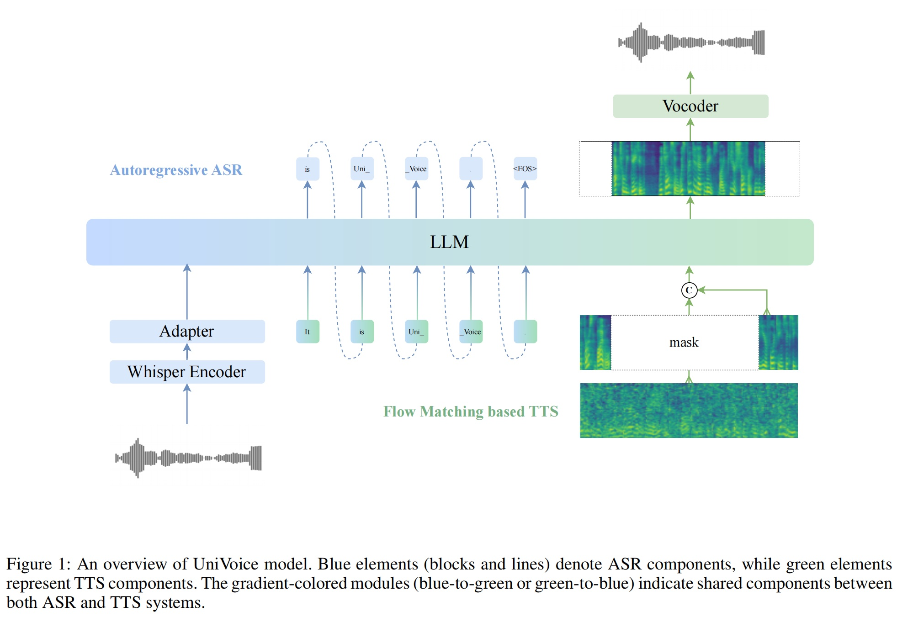

UniVoice: Unifying Autoregressive ASR and Flow-Matching based TTS with Large Language Models
Abstract.
Large language models (LLMs) have demonstrated promising performance in both automatic speech recognition (ASR)
and text-to-speech (TTS) systems, gradually becoming the mainstream approach. However, most current approaches address
these tasks separately rather than through a unified framework. This work aims to integrate these two tasks into
one unified model. Although discrete speech tokenization enables joint modeling, its inherent information loss limits
performance in both recognition and generation. In this work, we present UniVoice, a unified LLM framework through
continuous representations that seamlessly integrates speech recognition and synthesis within a single model. Our approach
combines the strengths of autoregressive modeling for speech recognition with flow matching for high-quality generation.
To mitigate the inherent divergence between autoregressive and flow-matching models, we further design a dual attention mechanism,
which switches between a causal mask for recognition and a bidirectional attention mask for synthesis. Furthermore, the proposed
text-prefix-conditioned speech infilling method enables high-fidelity zero-shot voice cloning. Experimental results demonstrate
that our method can achieve or exceed current single-task modeling methods in both ASR and zero-shot TTS tasks.
This work explores new possibilities for end-to-end speech understanding and generation

Experiment Results
Zero-shot TTS Samples
Reference Text
Reference Wav
Generate Text
GT
SpeechT5
VALL-E
NaturalSpeech2
FireRedTTS
MaskGCT
F5-TTS
CosyVoice
UniVoice-TTS
uniVoice
Burn, fire, burn! Flicker, flicker, flame!
My Lord, Miss Milner's taste is not a depraved one; it is but too refined.
She is wild to know how to do things.
What can you mean by that, Miss Woodley? You talk mysteriously.
cried the young ladies, and they quickly put out the fire.
And then he told all about his youth; and the little Mice had never heard the like before; and they listened and said,
This evening! they all said.
It was in a corner that he lay, among weeds and nettles.
Some poems of Solon were recited by the boys.
Nothing can exceed the beauty or art of the introduction, in which he is using words after his accustomed manner.
It might have seemed that a trout of this size was a fairly substantial meal.
This would be an easy way of doing it, but it would not be the best way, for the reason that it is too easy to call attention to itself.
Enter Hamlet with his favourite boar hound.
To be or not to be, that is the question; whether 'tis nobler.
Hers happened to be in the same frame too, but she evidently didn't care about that.
I thought we were 'stumped' again when I first saw that picture, but it's been of some use, after all.
If spoken to, she would not speak again.
This outward mutability indicated, and did not more than fairly express, the various properties of her inner life.
Holmes held it out on his open palm in the glare of the electric light.
Then he approached it, and, standing on tiptoe with his neck craned, he looked into the room.
she asked impulsively, I didn't believe you could persuade her, father.
And the old gentleman was so delighted with his success, that he had to burst out into a series of short, happy bits of laughter, that occupied quite a space of time.
The goat's warlike spirit was roused by this successful attack.
The idea of patching Captain Bill to a goat was vastly amusing to him, and the more he thought of it the more he roared with laughter.
And what sort of evidence is logically possible?
They must have some characteristic which makes us regard them as referring to more or less remote portions of the past.
We have heard something of your story, said Kenneth, and are interested in it.
If the prosecution were withdrawn and the case settled with the victim of the forged check, then the young man would be allowed his freedom.
You will take me on board, count, will you not?
It must be owned, and no one was more ready to confess it than himself, that his literary attainments were by no means of a high order.
said she, pointing to the playthings; see!
The Princess sat down under a blue canopy with bouquets of roses; and she let Anders sit in a golden chair by her side.
You'll never dig it out of the Astor Library.
Ruth was glad to hear that Philip had made a push into the world, and she was sure that his talent and courage would make a way for him.
in this monotonous life of mine, that was a pleasant event.
Indeed, there were only one or two strangers who could be admitted among the sisters without producing the same result.
She poured into the dish a quantity from each of these bottles.
I am not allowed to perform magic, except for my own amusement, he told his visitors, as he lighted a pipe with a crooked stem and began to smoke.
She poured into the dish a quantity from each of these bottles.
I am not allowed to perform magic, except for my own amusement, he told his visitors, as he lighted a pipe with a crooked stem and began to smoke.
Are you certain that this is the Mediterranean?
For some moments he seemed perfectly stupefied; then, recovering himself, he began to overwhelm the count with a torrent of questions.